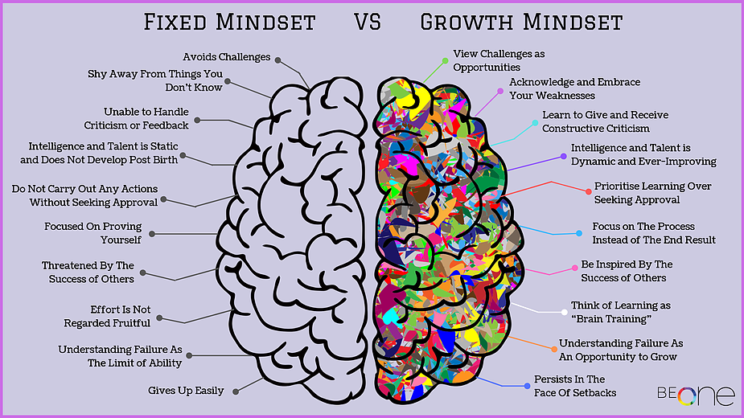

Neuroplasticity is characterized as the brains ability to organise and grow neural connections. The brain is like iron in the sense that its malleable and able to change shape. Neuroplasticity in simple terms means that the brain can change shape to improve itself in particular topics Some says because of this, mentally training or doing something mentally can be just as or alomst as beneficial as doing physical training or activities. Neuroplasticity emphasizes repeatedly doing an activity over and over creates more and stronger neural connections regarding that repeated activity. By understanding this, our brains can improve the more you practice or just envisioning youself practicng can greatly help your learning and determination to learning different and new things.
Neuroplasticity is a really new and unique idea or way of learning that I have yet to incorporate in my own learning. With time, I believe that my confidence and determination to learn the things that I found hard before will improve. Like I said before, neuroplastcity emphasizes repeated practice in a certain area that you want to get better in. A way I thought would be a good way to train my brain is to do brain teasers. A brain teaser is a puzzle or problem that is designed to be solved for amusement. Personally I enjoy doing number related puzzle like sudoku. You can challenge yourself by timing yourself how long it takes to solve the puzzle. I have never tried it myself but you can try imagining yourself solving the puzzle, visualizing yourself solving it to help yourself grow as a learner and thinker. To create those neural connecions and help them grow.
I am really fascinated by the idea of visualizing yourself doing something can be just as effective as actually doing it. I feel like this website here really got me thinking about integrating this type of learning into my own and write notes down on if it works for myself or not



The idea around growth mindset is the understanding that your brain has the capability to excel in all areas. The confidence that you are able to learn whatever you set your mind to. Most people usually have called a fixed mindset. Meaning that they believe that academic ability and intelligence is an unchangeable constant so in turn try not to challenge themselves in the certain areas they feel they lack in. Growth mindset is all about challenging yourself to improve in areas you felt you had short comings in and seeing mistakes not as not being intelligent enough, but to further grow and increase the current capabilities.
I have actually experienced this for myself during school. I felt like at one point that math was always going to be a problem. I felt that anything that they were teaching me math related was not being absorbed and I was always going to have trouble with math. Then one year, I had a new teacher teach me new ways to look at math problems and a different way to solve them. All of a sudden I had big improvements in the subject but back then I had not noticed. Now I enjoy solving mathematical equations and anything related to numbers.
Before exploring this idea, I believe I had a fixed mindset and that I shouldn't waste my time and effort in things I felt I had trouble in so I have avoided challenging myself in those aspects. But after reading up on growth mindset, I am very anxious and intrigued to try applying this idea to myself and try learning things I struggled in and also try anything I set my mind on. I am very excited to try and integrate neuroplasticity and a growth mindset to my learning journey because I feel like it will change my view on how to learn and my determination and confidence to learn. This website was very helpful to me in understanding what a growth mindset is.